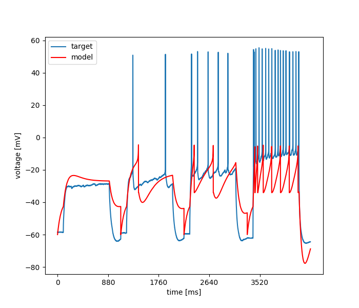

Thu Nov 29 21:30:40 2018
Optimization of "".hoc based on: /home/szabolcs/optimizer/multirun/FUTTATNI/IF/INSPYRED/PAES/adexpif_external_ca3_pc_6/ca3_pc_v2_4.csv
Results
| Parameter Name | Minimum | Maximum | Optimum |
|---|---|---|---|
| parameter0 | 0.001 | 0.01 | 0.008190092802460733 |
| parameter1 | 10.0 | 100.0 | 57.95984448443353 |
| parameter2 | -70.0 | -40.0 | -40.0 |
| parameter3 | 0.0 | 30.0 | 15.994694865316351 |
| parameter4 | -40.0 | -10.0 | -18.096990084955422 |
| parameter5 | 0.5 | 5.0 | 5.0 |
| parameter6 | -5.0 | 5.0 | 3.3822993367769776 |
| parameter7 | 0.0 | 1.0 | 0.2320198147338332 |
| parameter8 | 0.5 | 5.0 | 2.71633560733403 |
| parameter9 | 10.0 | 500.0 | 246.4146224769332 |
Fitnes: (0.07408576282145453, 0.0, 0, 0.035222560558192104, 0.25, 0.007744, 0.03520096876447927, 0.375, 0.001658710743801653, 0.030490181629689538, 0.4, 0.0003784793388429752)

Error Tolerance for x: = None
evo_strat = PAES
Inertia: = None
boundaries = [[0.001, 10.0, -70.0, 0.0, -40.0, 0.5, -5.0, 0.0, 0.5, 10.0], [0.01, 100.0, -40.0, 30.0, -10.0, 5.0, 5.0, 1.0, 5.0, 500.0]]
Number of Iterations: = 2.0
Initial Temperature: = None
Number of CPU: = 1.0
Cognitive Rate: = None
Force bounds: = False
Std. Deviation of Gaussian: = None
Cooling Rate: = None
Number of Generations: = 100.0
num_params = 10
Number of Repetition: = None
Error Tolerance for f: = None
seed = 1240.0
Size of Population: = 100.0
Mean of Gaussian: = None
Neighborhood Size: = None
Social Rate: = None
Update Frequency: = None
starting_points = None
Temperature: = None
Step Size: = None
Crossover Rate: = None
Mutation Rate: = 0.25
Number of Islands: = 2.0
feats = MSE (excl. spikes), Spike count (stim.), Latency to 1st spike
weights = [0.333333333333, 0.333333333333, 0.333333333333]
user function =